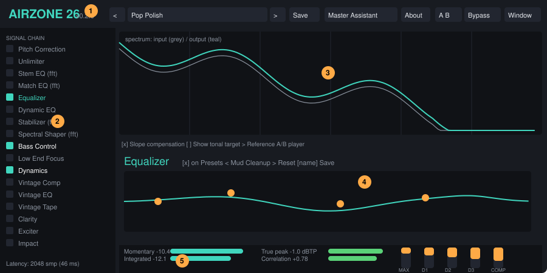
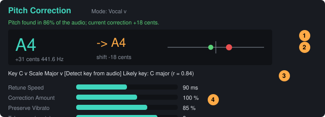
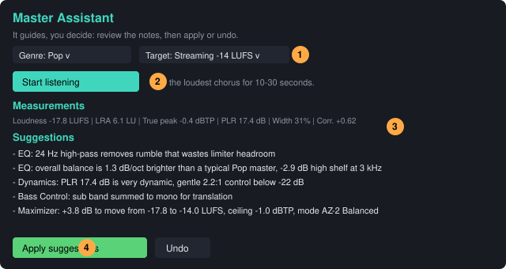
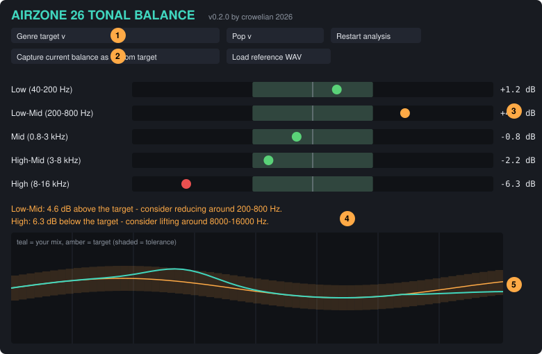

AirZone 26
Full mastering suite for REAPER — VST3 & CLAP · Windows 10/11 · macOS Apple Silicon
Version 0.2.0 · by crowelian 2026
1. Introduction
AirZone 26 is a mastering plug-in written in Rust. It puts twenty-three processing modules, a metering section, a Master Assistant and 82 factory presets behind a single plug-in window, so you can take a finished stereo mix to a release-ready master on the master track of one REAPER project.
2. Installation
Download the build for your system from the project's Actions → Build artifacts or Releases page. Each ZIP contains two plug-ins in VST3 and CLAP format - AirZone 26 (the mastering suite) and AirZone 26 Tonal Balance (a companion meter, see below) - and this manual.
| System | Archive | Formats |
|---|---|---|
| Windows 10 / 11, 64-bit (Intel/AMD) | AirZone26-Windows-x64.zip | VST3, CLAP |
| macOS 11+ on Apple Silicon (M1, M1 Pro/Max/Ultra, M2, M3 …) | AirZone26-macOS-arm64.zip | VST3, CLAP |
Windows 10 / 11
- Copy
AirZone 26.vst3toC:\Program Files\Common Files\VST3\. - Optionally copy
AirZone 26.claptoC:\Program Files\Common Files\CLAP\. - If Windows SmartScreen blocks the file after download, right-click the ZIP → Properties → tick Unblock before extracting.
No runtime installation is needed (the C runtime is linked statically).
macOS (Apple Silicon)
- Copy
AirZone 26.vst3to~/Library/Audio/Plug-Ins/VST3/(or/Library/Audio/Plug-Ins/VST3/for all users). - Optionally copy
AirZone 26.clapto~/Library/Audio/Plug-Ins/CLAP/. - The build is ad-hoc signed but not notarised. Remove the download quarantine flag once:
xattr -dr com.apple.quarantine "~/Library/Audio/Plug-Ins/VST3/AirZone 26.vst3" xattr -dr com.apple.quarantine "~/Library/Audio/Plug-Ins/CLAP/AirZone 26.clap"
The plug-in is a native arm64 binary — REAPER must run as the native Apple Silicon build (not under Rosetta) to load it.
REAPER setup
- VST3: Options → Preferences → Plug-ins → VST, make sure the VST3 folder above is listed, then click Re-scan (or Clear cache and re-scan).
- CLAP: REAPER 7 and newer load CLAP natively from the CLAP folders; use Options → Preferences → Plug-ins → CLAP if you keep them elsewhere.
- Insert it: on the master track click FX → Add → search
AirZone 26. - Put AirZone 26 last in the master FX chain (after any metering you want to keep post-master). Tick Process stereo only is not needed; the plug-in is stereo in / stereo out.
3. Quick start
- Put the plug-in on the master track and play your song.
- Pick a starting preset from the preset menu at the top (for example Universal Master), or click 🎛 Master Assistant and let it listen to the loudest part of the song.
- Play the loudest chorus. Watch the Integrated and True pk meters at the bottom. The Maximizer Gain control sets how hard you push into the ceiling.
- Click modules in the left rail to edit them. The check box next to a name turns it on or off.
- Toggle Bypass (top bar) to compare with the original. Bypass is latency-compensated so the comparison stays aligned, but it is not loudness matched — adjust for level when judging.
- Save your result with 💾 Save.
4. The interface

- Preset browser, A/B, Window menu
- Module chain rail
- Spectrum analyzer
- Module editor
- Meters (LUFS, true peak, gain reduction)
| Area | What it does |
|---|---|
| Top bar | Preset browser (◀ ▶ step through presets, the menu lists them by category, hover for a description), Save, Master Assistant, global Bypass, input and output gain, and Dither selection. |
| Left rail – signal chain | All 23 modules in processing order from top to bottom. The check box enables a module, clicking the name selects it for editing, ▲ ▼ move it in the chain. Modules tagged ·fft share one FFT pass (see Signal chain). The footer shows the current total latency. |
| Centre – analyzer | Live spectrum of the chain input (grey) and output (teal). The slope compensation option adds +4.5 dB/octave so typical music appears flat, making tonal imbalances easy to see. |
| Centre – module editor | Controls of the selected module, with module-specific displays (EQ curve, correction curves, gain-reduction meters …). |
| Bottom bar | Loudness (momentary / short-term / integrated), true peak, stereo correlation, LRA, input integrated loudness, and gain-reduction meters for the Maximizer, the three Dynamics bands and the Vintage Comp. |
Mouse & keyboard
| Gesture | Result |
|---|---|
| Drag a slider | Change value. Hold Shift while dragging for fine control. |
| Double-click, or Ctrl/Cmd+click | Reset to default. |
| Click the value text | Type a value (units are accepted, e.g. -3, 1.5k). |
| Window menu (top bar) | Chooses the window size (900x600 ... 1600x1000). The size is saved and applied the next time the plug-in window is opened. (The window is not resizable by dragging because host-side resizing of plug-in windows is unreliable.) The layout adapts to the size: below about 820 px the chain list becomes a drop-down, columns stack, meters scroll sideways and every panel scrolls, so nothing is cut off. |
| EQ: drag a node | Horizontal = frequency, vertical = gain (filters without gain move horizontally only). |
| EQ: scroll over a node | Change the band's Q (bandwidth). |
5. Signal chain
Audio enters through Input gain, passes through every enabled module in the order shown in the rail, goes through Output gain and the optional Dither, and leaves. A disabled module costs nothing and adds no latency.
Default order:
The FFT group
Stem EQ, Match EQ, Stabilizer and Spectral Shaper (and Pitch Correction when set to Full Song mode) work in the frequency domain (2048-point STFT, 75 % overlap). They share a single analysis/synthesis pass so enabling all four costs the same latency as enabling one (2048 samples). The shared pass runs at the position of the first enabled FFT module in the chain, and the enabled modules inside it always run in the order Match EQ → Stem EQ → Stabilizer → Spectral Shaper → Full-Song tuning.
Order guidelines
- Corrective first (Unlimiter, EQ, Dynamic EQ, Stabilizer) then dynamics, then colour, then width, then limiting last.
- Keep the Maximizer at the end — it guarantees the ceiling, so nothing after it should add level.
- Put the Imager after saturation: harmonics generated by the Exciter can then be widened too.
- Use Reset chain order in the rail to return to the default.
6. Modules
Every parameter is also listed with its range and default in the parameter reference.
Equalizer
Eight bands. Each band has an on switch, a Type (Bell, Low Shelf, High Shelf, High Pass, Low Pass, Notch), Frequency, Gain, Q, Slope (12/24/36/48 dB/oct for the pass filters) and a Placement:
- Stereo – both channels. Mid / Side – only the mid or side signal (for example a side-only high shelf for air). Left / Right – one channel.
The curve shows the combined response. Band defaults are laid out as a typical mastering EQ: 1 high-pass, 2 low shelf, 3–6 bells, 7 high shelf, 8 low-pass.
Dynamic EQ
Four bell filters whose gain follows the level in their own band. Static Gain is always applied. Dynamic Range is how far the gain may move: negative values cut when the band exceeds Threshold (de-essing, de-muddying), positive values boost. Ratio, Attack and Release shape the response. Use it for problems that come and go.
Match EQ
Captures the average tonal balance (64 log-spaced bands) of two sources and applies the difference.
- Play your mix and click ● Learn Source for 20–60 seconds of representative material, then stop.
- Play a reference track and click ● Learn Reference (live); or type the path of a WAV file and click Analyze file. (WAV 16/24/32-bit and 32-bit float are supported.)
- Enable the module. The curve shows the correction. Amount scales it, Smoothing widens its resolution, and Max Correction limits how far any band may be moved.
Only tonal shape is matched (overall level differences are removed), so loudness is untouched. Captured profiles are saved inside your REAPER project. The plug-in must be playing in real time to learn live; the WAV analysis works offline.
Stabilizer
A slow, adaptive equaliser (32 bands) that nudges the spectrum toward a target slope. It is meant to keep the tonal balance consistent from section to section, not to paint a new sound. Amount scales the effect, Range limits the maximum boost/cut per band, Target Slope is the desired tilt in dB/octave (−4.5 is typical for finished music), Speed sets how fast it adapts, and Use Reference makes it follow the Match EQ reference's shape. The bar chart shows the correction in real time.
Spectral Shaper
A frequency-domain resonance suppressor. It compares each FFT bin with the local average (Selectivity sets how many bins around it count as "local") and reduces peaks that stick out by more than Sensitivity dB, by an amount set by Depth, only between Low Limit and High Limit. Tilt adds a gentle spectral tilt. Listen to Delta plays back only what is being removed — use it to be sure you are taking away harshness and not body.
Vintage EQ
A passive-EQ-style tone shaper. The low section has a Low Frequency selector (20/30/60/100 Hz), Low Boost and Low Atten; using both at once gives the classic "bigger yet tighter" bass. The high section has a High Boost bell with selectable frequency (3–16 kHz) and Bandwidth, and a High Atten shelf with selectable frequency (5/10/20 kHz). Tube adds gentle valve-style output saturation. Knob values 0–10 are not dB; 10 is roughly +14 dB on the low boost.
Dynamics
Three-band compressor with phase-aligned Linkwitz-Riley 4th-order crossovers (Crossover 1/2). Each band has Threshold, Ratio, Knee, Attack, Release and make-up Gain, plus a downward expander (Expander Threshold/Ratio) to lower noise floors. Stereo Link 100 % compresses both channels equally (stable image); lower values react to each channel separately. Mid/Side processes mid and side independently. Gain-reduction meters show each band.
Vintage Comp
An opto-style compressor: gentle, programme-dependent release made of a fast and a slow stage, so short peaks recover quickly while sustained compression releases slowly. Input drives the detector, Warmth adds valve-style saturation, Mix gives parallel compression.
Unlimiter
Brings back transients on over-limited material by boosting peaks that stand out above the short-term level. Amount scales the effect, Max Boost is the largest boost applied to a peak, Threshold is how far a peak must stand above the body, and Release how fast the boost relaxes. Compensate gently lowers the body to keep loudness similar. Place it first and follow it with the Maximizer. Because the source's lost peaks cannot be recreated exactly, expect an improvement in punch and dynamics rather than a perfect reconstruction.
Impact
Three-band attack/sustain shaper. Positive Attack adds snap to drums; negative softens them. Sustain raises or lowers the tail between hits. Use small values (±1–3 dB) on a full mix.
Low End Focus
Works on everything below Focus Frequency: Punch accentuates kicks and bass attacks, Sustain trims or extends their tails, Contrast tightens the low end by adding level-dependent compression.
Bass Control
Splits the low end into Sub (below the Sub/Bass split), Bass (to the Bass/Low-Mid split) and the rest, and gives you separate Gain, Mono (fold to centre) and — for the bass — Punch and Tighten. The three level bars show where your energy sits; Auto Balance slowly adjusts the sub level to reach the Sub-Bass Target (the dB difference between sub and bass). A sub region folded to mono (100 %) is the single easiest way to improve translation to club systems and vinyl.
Clarity
Brings out quiet detail and air in the upper mids and highs without making loud passages harsh. The band above Lower Edge is watched by a stereo-linked level detector; quiet material in that band is lifted by up to 8 dB (Detail), loud material is left alone. Harmonics adds a little anti-aliased saturation for sparkle, Warmth is a ±3 dB low shelf at 200 Hz to balance a brighter result, and Mix blends the effect in parallel. The Boost bar shows the detail lift being applied. Typical use: Detail 30-50 %, Lower Edge 2 kHz, Harmonics 15-25 %.
Exciter
Four-band harmonic exciter with anti-aliased (first-order ADAA) saturation. Mode: Tape (odd harmonics, smooth), Tube and Warm (even harmonics), Retro (brighter, edgier). Each band has Drive (how hard the band is pushed into the shaper), Amount (blend of saturated signal) and Gain. A little Amount on the top band is a classic "air" tool; keep low bands subtle.
Vintage Tape
Tape machine emulation: Drive into saturation, selectable Speed (7.5, 15, 30 ips; lower speeds mean a bigger head bump and darker top), Saturation, Wow & Flutter (pitch modulation), Hiss and Age (progressive high-frequency loss). Adds a fixed 16-sample latency.
Imager
Four-band stereo width (0 % = mono, 100 % = unchanged, 200 % = double). Stereoize adds a mono-compatible decorrelated component to widen narrow sources. Balance shifts left/right. In the Imager panel, Width and Corr. show the current stereo width and phase correlation (negative = phase problems).
Delay
Stereo delay with independent left/right times, Feedback, Ping-Pong and low/high cuts on the feedback path. Use sparingly in mastering — a short, filtered slap can add depth to sparse material.
Reverb
A compact algorithmic (comb + all-pass) reverb: Room Size, Damping, Width, Pre-Delay, Low Cut and Mix. Solo Wet removes the dry signal so you can hear only the reverb (the Delay has the same switch for its echoes) - switch it off again before bouncing. In mastering, 3–8 % of a small room can "glue" dry stems.
Stem EQ
Estimates four stems — Bass, Drums, Vocals, Other — and lets you change the level (±12 dB) and tone (±6 dB tilt) of each without opening the mix. Stems are estimated from harmonic-vs-percussive structure and stereo-centre energy, so separation is approximate. Focus sets how hard the masks are (higher = more separation, more artefacts). Solo lets you audition what the algorithm believes each stem to be. For best results keep moves under ±4 dB.
Pitch Correction

Natural-sounding automatic pitch correction in three modes. It is off by default and sits first in the chain.
| Mode | Use it on | How it works |
|---|---|---|
| Vocal | A solo vocal, acapella or bounced lead-vocal stem | A YIN tracker follows the fundamental frequency. A slowly-moving centre pitch is derived from it, so natural vibrato and expression are left on top of the correction. The nearest note of your key/scale is chosen with hysteresis (no flickering between notes), and the pitch is moved with formant-preserving time-domain PSOLA, so the voice does not turn into a chipmunk or a robot. |
| Instrument | A monophonic line: guitar lead, bass, synth, brass, strings | Same engine with a wider tracking range and slower defaults; suitable for intonation fixes and bass. |
| Vocal in Full Mix | A finished mix where the lead vocal is slightly off | The lead vocal is estimated from the mix (harmonic, centre and voice-band analysis), pitch-corrected on its own, and added back to the rest of the mix (mix minus estimated vocal). Separation is approximate, so use moderate settings (50-80 % amount, slow retune). Latency is about 2048 samples plus the PSOLA delay. |
| Full Song (tuning) | A stereo mix | Measures the overall tuning of the programme against the 12-tone grid (via phase-accurate spectral peaks) and, if you wish, moves the whole spectrum by a few cents with a phase vocoder (shared FFT pass). It does not retune individual notes in a polyphonic mix — that is not possible without stems. |
Vocal / Instrument controls
- Key / Scale – Chromatic (any semitone), Major, Natural/Harmonic Minor, Major/Minor Pentatonic, Blues, Dorian, Mixolydian. 🎼 Detect key from audio reads a pitch-class histogram collected while the audio plays (Krumhansl-Schmuckler) and sets Key and Scale to Major/Minor for you. Use Clear key memory before analysing a different song.
- Retune Speed – how long it takes to move to the target note. 0 ms = hard, robotic "effect" tuning; 40 ms = tight modern pop; 90–150 ms = natural; 200+ ms = very gentle.
- Correction Amount – scales the correction (50 % moves notes half-way to the target).
- Preserve Vibrato – at 100 % only the slow pitch centre is corrected and all vibrato and slides are kept; at 0 % the pitch is flattened onto the target.
- Tolerance – deviations smaller than this (in cents) are left untouched, which keeps a natural, slightly imperfect feel.
- Max Correction – the largest shift ever applied. Keep ≤ 200 cents for natural results.
- Lowest / Highest Pitch and Voicing Confidence – the range in which pitch is trusted. Breaths, consonants and noise are never retuned; the correction fades out within 20 ms when no pitch is found.
- A4 Reference – the tuning of your song (415–466 Hz).
The big readout shows the detected note and cents, the target note, and the applied shift; the needle shows detected (red) versus corrected (green) pitch around the target note.
Full Song controls
- Auto Detect Tuning – corrects slowly (about 10 cents per second) toward Target A4, only when the detection confidence is high; Tuning Amount scales it. Manual Tuning applies a fixed offset instead (e.g. +31.8 cents converts 432 Hz to 440 Hz).
Codec Preview
A monitoring tool that lets you hear roughly how your master will behave after lossy encoding. It simulates MP3-like, AAC-like and Opus-like encodes at 32-320 kbps: the typical encoder low-pass (for example about 16 kHz at 128 kbps), joint-stereo simplification (the side signal is quantised more coarsely at low bitrates), per-band quantisation that creates spectral “holes” and quantisation noise, and the pre-echo smearing of a long transform window. Listen to Difference plays only what the simulated encode removes - if that sounds musical, the encode will be audible.
Vintage Limiter
A fast, coloured peak limiter with selectable Input drive, Attack, Release and Character (saturation). Use it as a tone-shaping stage before the Maximizer; it does not guarantee the ceiling.
Maximizer
The final lookahead limiter. Gain pushes the signal into the Ceiling; the ceiling is a true-peak ceiling when True Peak is on (inter-sample peaks are estimated with 4× interpolation). Release sets the recovery time, Character blends in soft saturation before the limiter, and Stereo Independence lets channels limit separately (0 % = fully linked, best image).
| Algorithm | Lookahead | Behaviour |
|---|---|---|
| AZ-1 Clean | ≈1 ms | Transparent, fixed release. Best for dynamic music and light limiting. |
| AZ-2 Balanced | ≈2 ms | Programme-dependent release — fast for shallow reduction, slower for deep. The all-rounder. |
| AZ-3 Multiband | ≈2.5 ms | Three independently limited bands plus a safety limiter; prevents bass from pumping the highs. |
| AZ-4 Aggressive | ≈3 ms | Four bands, saturating pre-stage; the loudest option. |
| AZ-5 Adaptive | ≈2 ms | Release adapts to the crest factor of the music (peaky material gets a faster release). |
| AZ-6 Clip + Limit | ≈1 ms | A soft clipper in front of a short limiter: tames drum peaks by clipping instead of squeezing, giving density and keeping transients punchy. |
| AZ-7 Smooth | ≈5 ms | Long lookahead and a slow, program-dependent release: very gentle, nearly inaudible limiting. |
A final 0.8 ms safety stage is always active so the ceiling holds in every mode. The GR meter shows the current gain reduction. As a rule of thumb, more than 6–8 dB of reduction on a full mix will start to sound dense; the Master Assistant warns you above 8 dB.
Dither
Choose 16 bit, 20 bit or 24 bit in the top bar to add noise-shaped TPDF dither to the final output — only when you render to that bit depth, and only once, at the very end of the chain. Leave it Off when rendering 32-bit float.
7. Master Assistant

Open it with 🎛 Master Assistant.
- Choose a Genre (it selects the target tonal balance, limiter algorithm, compression style and minimum stereo width) and a Target: Streaming −14 LUFS / −1 dBTP, Loud −9 LUFS / −0.3 dBTP, Broadcast −23 LUFS / −1 dBTP, or Custom.
- Under Modules the assistant may adjust tick which modules it is allowed to touch — your own flow. Modules you leave unticked are never changed.
- Click Start listening and play the loudest, most representative section (a chorus). After at least five seconds click Analyze now; 20–30 seconds gives better results.
- Read the Measurements (loudness, LRA, true peak, crest factor, width, correlation, sub-versus-bass balance) and the Suggestions. Every suggestion has a plain-language reason.
- Click ✔ Apply suggestions. The assistant sets only the parameters it mentions; you can then edit anything. ↶ Undo restores the state from before you applied.
The assistant measures the signal arriving at the plug-in input, so it analyses your unprocessed mix. It suggests: corrective EQ bands (up to five, ±4 dB maximum), a 24 Hz high-pass, gentle dynamics when the crest factor is high, Unlimiter when the mix looks over-limited, sub mono-folding and sub trims, widening or narrowing of the highs, top-end excitement for dull mixes, the Stabilizer for large tonal deviations, and finally Maximizer gain, ceiling and algorithm to reach the loudness target.
Reference A/B player
Open Reference A/B player (under the spectrum), type the path of a WAV file (uncompressed PCM or float, up to 6 minutes) and press Load. Then:
- Master / Reference switches the output between your processed mix and the reference with a 5 ms cross-fade. The meters, spectrum and vectorscope show whatever you are listening to, so you can compare loudness and tonal balance directly.
- Play / Pause / Restart and the position slider control the reference transport (independent of the host transport).
- Match loudness to master scales the reference to the integrated loudness of your processed signal (learned while you listen to the master), so you judge tone and dynamics instead of volume. Trim adds a manual offset.
The reference is played back instead of the master only while Reference is selected; it never changes the processing. Remember to switch back to Master before you render.
AirZone 26 Tonal Balance (companion plug-in)

A second plug-in in the package, intended for the end of the master chain (after the limiter). It passes audio through unchanged and shows how the tonal balance of your music compares with a target:
- Five region gauges (Low 40-200 Hz, Low-Mid 200-800 Hz, Mid 0.8-3 kHz, High-Mid 3-8 kHz, High 8-16 kHz) show the deviation from the target in dB; the grey band is the tolerance (default ±3 dB). Green = inside, amber = outside, red = far outside.
- A curve view overlays your mix (teal) on the target (amber with a shaded tolerance range).
- Targets: eight genre targets, or a custom target that you either capture from audio you are currently playing (for example a reference track) or load from a WAV file.
- Written advice names the regions that are too high or too low and suggests cutting or lifting them.
- Analysis Memory sets how many seconds of music are averaged. Play the loudest part of the song for 10-20 seconds for a stable picture.
Only the shape of the spectrum is compared (the overall level is removed), so the meter is independent of loudness.
Step-by-step: using Tonal Balance
- Insert it last on the master track, after AirZone 26 (and after the limiter). It is a separate plug-in called AirZone 26 Tonal Balance; it does not change the sound.
- Pick a target: choose a genre (Pop, Rock, Hip-Hop, EDM, ...) or switch to Custom.
- Play the loudest section for 10-20 seconds. The gauges fill in once enough audio has been heard. If you jump around in the song, press Reset to start a fresh average.
- Read the gauges. The middle line is "exactly like the target". Bar to the right = too much in that region; to the left = too little. Green inside the grey tolerance zone, amber slightly outside, red far outside.
- Read the curve. Teal is your song, amber the target and its shaded range. Where teal leaves the shaded area, that is where the balance is off.
- Fix it in AirZone 26, not in the meter: e.g. Low is red-high, so lower the Equalizer's low band or the Bass Control; High is red-low, so add a little high shelf or Clarity. Re-check after each change.
- Use your own reference: play a song you love, press Capture current balance (or Load WAV) to make it the custom target, then play your master and match it.
| Control | Meaning |
|---|---|
| Tolerance | Width of the grey zone in dB (1-8, default 3). Smaller is stricter. |
| Analysis Memory | How many seconds are averaged (1-30, default 6). Longer = steadier but slower to react. |
| Genre / Custom | Selects the target curve. |
8. Presets
Pick presets from the menu in the top bar or step through them with ◀ ▶. A preset is a complete snapshot: applying it first returns every parameter to its default (the Bypass switch and your chain order are left alone) and then sets the preset's values. Preset changes are sent through the host, so they are undoable in REAPER and recordable as automation. Hover a preset name for its description.
Module presets
Every one of the 23 modules also has its own preset menu at the top of its panel (about 145 module presets in total: reverb rooms, delay timings, EQ curves, compressor styles, limiter algorithms, pitch settings and more). A module preset changes only that module: it resets the module's parameters, applies the preset and switches the module on. Use the arrows to step through the list, Reset to return the module to its defaults, and the name box with Save to store your own module presets (Presets/Modules/<module>/ in the user folder below).
A/B compare, tonal target, vectorscope, matched bypass
- A/B (top bar): two complete settings slots. Click the other letter to store the current state in the active slot and recall the other one; Copy copies the current state into the inactive slot.
- Show tonal target (under the spectrum): overlays the tonal balance typical for the chosen genre (amber line), aligned to your output between 100 Hz and 8 kHz.
- Vectorscope (Imager panel): mid/side scope of the output. A thin vertical line is mono, a wide cloud is wide, a horizontal line is out of phase.
- Loudness-matched bypass (top bar, on by default): when you bypass, the original is level-matched to the processed signal using the momentary loudness difference, so you compare tone and dynamics instead of volume.
User presets
💾 Save stores the current settings as a .azpreset file (readable JSON) under the "User" category:
- Windows:
%APPDATA%\AirZone26\Presets - macOS:
~/Library/Application Support/AirZone26/Presets
Copy those files to share presets. REAPER's own FX preset system and project states also store the full plug-in state.
The Classic ... categories (Classic Genre, Classic Source, Classic Style, Classic Loudness) form a second library laid out the way classic mastering suites organise theirs - by genre, by source/instrument group, by overall character and by delivery loudness. All settings are original.
Factory preset catalogue (82 presets)
Utility
| Preset | What it does |
|---|---|
| Init (all modules off) | Neutral starting point: every module disabled, all values at default. |
| Safety Limiter -1 dBTP | Transparent true-peak safety limiter only. |
| Sub to Mono | Sums everything below ~120 Hz to mono for tight, translatable low end. |
| Mid/Side Air + Tight Bass | Side-only high shelf for air, mid-only low cut for clean centre. |
| Gain Stage -3 dB Headroom | Pulls the input down 3 dB and restores it on the output; chain gain staging helper. |
Genre
| Preset | What it does |
|---|---|
| Universal Master | Balanced starting point for most material. |
| Pop Polish | Bright, forward, wide and radio-ready. |
| Pop Loud | Competitive streaming/radio loudness with controlled highs. |
| Rock Glue | Cohesive band feel: gentle bus compression, tape warmth. |
| Rock Punch | Drum-forward and aggressive without harshness. |
| Hip-Hop Heavy Low End | Deep, controlled sub with crisp vocal presence. |
| R&B Smooth | Silky top, warm low-mids, wide but safe. |
| EDM Club Loud | Tight, loud club master with mono-compatible bass. |
| EDM Festival | Maximum impact: huge low end and bright top. |
| House Warm | Warm analogue house master with tape glue. |
| Acoustic Natural | Preserves dynamics and room; lifts detail gently. |
| Jazz Gentle | Open, airy and dynamic with a little vintage colour. |
| Folk Warmth | Cosy low-mids, soft top, natural dynamics. |
| Metal Wall | Dense, aggressive and loud with tamed fizz. |
| Classical Transparent | Near-invisible mastering: level only, wide and open. |
| Cinematic Wide | Wide, deep and dramatic with smooth top end. |
| Lo-Fi Cassette | Dusty cassette character: rolled highs, wow & hiss. |
| Podcast / Voice | Speech clarity, controlled dynamics, -16 LUFS-friendly level. |
Loudness
| Preset | What it does |
|---|---|
| Streaming -14 LUFS Safe | Dynamic master aimed at normalised streaming (-14 LUFS, -1 dBTP). |
| Streaming Loud -10 LUFS | Louder commercial master with transparent peak control. |
| CD / Club Loud -8 LUFS | Maximum loudness; use with care. |
| Broadcast R128 -23 LUFS | Gentle control for EBU R128 delivery. |
| Vinyl Prep | Mono bass, tamed sibilance and top end for cutting lathe. |
Fix
| Preset | What it does |
|---|---|
| Tame Harsh Highs | Spectral shaper removes resonant harshness in the 2-9 kHz area. |
| Fix Muddy Mix | Dynamic cuts at 200-400 Hz only when the mud builds up. |
| Restore Crushed Mix | Unlimiter brings back peaks of over-limited audio, then re-limits cleanly. |
| Restore Drums in Loud Master | Unlimiter + Impact to bring snap back to a squashed mix. |
| Widen Narrow Mix | Widens mid/high bands while leaving the low end centred. |
| Mono Compatibility Check | Narrows the mix to ~60% for safe summing to mono. |
| De-Box / Cardboard Cut | Notches the boxy 400-600 Hz zone gently. |
| Add Air | Silky high shelf plus subtle harmonic excitation above 6 kHz. |
| Tighten Low End | Controls the 40-150 Hz dynamics for a tighter groove. |
| Bass Balance Auto | Bass Control auto-balances sub versus bass toward a smooth ratio. |
| Adaptive Tone Stabilizer | Slow adaptive tonal balance toward a natural -4.5 dB/oct slope. |
| De-Sibilance Light | Dynamic EQ on 6-9 kHz for gentle sibilance control. |
| Harsh Midrange Tamer | Dynamic cut at 2.5 kHz for forward vocals/guitars. |
Stem
| Preset | What it does |
|---|---|
| Vocals Forward +3 | Lifts the vocal stem 3 dB with a touch of presence. |
| Vocals Back -3 | Sits the vocal 3 dB deeper in the mix. |
| Drum Punch +2 | Boosts drums and trims sustained instruments for punch. |
| Bass Weight +2 | Adds weight to the bass stem without touching the kick transient. |
| Tame Bass -3 | Pulls the bass stem down when low end is overbearing. |
| Karaoke-ish Vocal Reduction | Heavily reduces the centre vocal stem (not a perfect separation). |
| Instrumental Focus | Backs vocals off and lifts everything else slightly. |
| Balanced Mix Rebalance | Small cuts/boosts across stems to even out a lopsided mix. |
Match
| Preset | What it does |
|---|---|
| Match EQ (capture ready) | Enables Match EQ: capture your mix as Source, a reference as Reference, then dial Amount. |
| Match EQ + Stabilizer Follow | Match EQ plus a Stabilizer that follows the reference tonal shape. |
Vintage
| Preset | What it does |
|---|---|
| Tape Glue | 15 ips tape saturation with gentle optical glue. |
| Opto Smooth | Slow, program-dependent opto-style levelling. |
| Passive EQ Magic | Low boost/cut trick plus silky 10 kHz lift. |
| Fairchild-Style Limit | Fast vintage-flavoured limiting with tube character. |
| Analog Warmth | Tube EQ, tape and a hint of warm saturation in the exciter. |
| Tube Bus | Tube-coloured bus compression. |
| Old Vinyl Era | Narrow, mono-ish low end and rolled top like an old pressing. |
Creative
| Preset | What it does |
|---|---|
| Parallel Punch Exciter | Saturates mids and highs for intensity. |
| Slap Delay Sparkle | Short filtered slap for depth in sparse material. |
| Mastering Room (subtle reverb) | Tiny room that glues dry stems together. |
| Stereoize Mono Source | Adds artificial width to near-mono material. |
| Kick & Snare Snap | Impact emphasises attack in low and high bands. |
| Soft Sustain Pad Lift | Boosts the sustain portion in mids/highs for lush pads. |
Signature
| Preset | What it does |
|---|---|
| AirZone Signature | Full-chain showcase: stabilised tone, glued dynamics, air and safe loudness. |
| Big & Open Mastering Chain | Wide, loud and clean master for dense modern productions. |
| Vintage Console Master | Passive EQ, opto compression, tape and a fast limiter. |
| Mix Bus Rescue | Corrective chain: stabilise tone, tame harshness, restore dynamics, control lows. |
Pitch
| Preset | What it does |
|---|---|
| Vocal - Natural Tune | Transparent vocal tuning: slow retune, vibrato preserved. Set Key/Scale for best results. |
| Vocal - Transparent Touch-up | Only fixes obviously off notes; leaves small drift alone. |
| Vocal - Modern Pop Tight | Faster, tighter correction for modern pop vocals. |
| Vocal - Hard Tune Effect | Instant snapping, no vibrato preservation: the classic robotic effect. |
| Vocal - Major Scale (set key) | Corrects to a major scale; choose the song's key in the Pitch panel (or use Detect key). |
| Vocal - Minor Scale (set key) | Corrects to a natural-minor scale; choose the song's key in the Pitch panel. |
| Lead Instrument - Gentle | Light intonation fix for monophonic lead lines (guitar, synth, brass). |
| Bass Guitar - Intonation | Low-range tracking for bass; slow, subtle correction. |
| Strings / Legato Lines | Very slow retune that follows slides and keeps expression. |
| Full Song - Auto Tune to 440 | Detects how far the whole mix sits from A=440 and gently moves it there. |
| Full Song - Auto Tune (half strength) | Corrects only half of a detected tuning offset for a subtle result. |
| Full Song - 432 Hz to 440 Hz | Raises a 432 Hz-tuned master by 31.8 cents to standard 440 Hz. |
| Full Song - 440 Hz to 432 Hz | Lowers a 440 Hz master by 31.8 cents to 432 Hz. |
| Full Song - Tune + Master | Auto tuning fix followed by a transparent master. |
9. Metering
| Meter | Meaning |
|---|---|
| Momentary / Short / Integrated | LUFS per ITU-R BS.1770-4 K-weighting: 400 ms window, 3 s window, and gated whole-programme value (absolute gate −70 LUFS, relative gate −10 LU). Integrated needs a few seconds of audio; press Reset meters before measuring a new pass. |
| True pk | Highest inter-sample (true) peak at the output in dBTP. Turns red when it exceeds the Maximizer ceiling. |
| Corr. | Stereo phase correlation, −1 … +1. Stay above 0 for mono-compatible material. |
| LRA | Loudness range (EBU R128 method, 10th–95th percentile of gated short-term loudness). |
| In | Integrated loudness of the plug-in input, handy for judging how much the chain added. |
| GR meters | Gain reduction in dB (Maximizer, Dynamics bands, Vintage Comp). |
10. Mastering workflows
A. Clean loudness for streaming
- Load Streaming −14 LUFS Safe.
- Play the loudest chorus; raise the Maximizer Gain until Integrated reads about −14 LUFS.
- Check True pk stays below −1 dBTP.
B. Competitive loud master
- Start from a genre preset (e.g. Pop Loud or EDM Club Loud).
- Fix tone first (EQ, Dynamic EQ), then control dynamics, then raise Gain.
- If the mix is already crushed, enable the Unlimiter before pushing further.
C. Matching a reference
- Learn Source on your mix, Reference on the reference track.
- Enable Match EQ at 50–80 % Amount; enable Stabilizer with "Use Reference" for slow tonal drift correction.
- Compare at matched loudness.
D. Fixing a lopsided mix without stems
- Open Stem EQ, solo each stem to hear what it grabs.
- Make small moves (±2–3 dB). Use the Tone control to brighten or darken a single stem.
E. Tuning a vocal
- Put a bounced vocal (or acapella) on its own track and add AirZone 26 with the preset Vocal - Natural Tune.
- Press Detect key from audio after playing a verse, or set the key yourself. Choose a scale (Major/Minor, or Chromatic if unsure).
- Adjust Retune Speed and Tolerance until the correction is inaudible but the pitch sits right; check the readout.
F. Fixing the tuning of a whole master
- Load Full Song - Auto Tune to 440 and play the song for about ten seconds.
- If the Detected bar shows a stable offset with good confidence, the correction glides in; otherwise leave it off.
G. Mono and vinyl safety
- Bass Control: Sub Mono 100 %, Sub/Bass split 100–150 Hz.
- Imager: reduce low-band width; watch Corr. stay positive.
11. Latency & rendering
| Source | Latency |
|---|---|
| FFT group (any of Stem EQ, Match EQ, Stabilizer, Spectral Shaper enabled) | 2048 samples (46 ms at 44.1 kHz, 43 ms at 48 kHz) |
| Maximizer | lookahead + 0.8 ms safety stage (about 2–4 ms depending on algorithm) |
| Vintage Tape | 16 samples |
| Pitch Correction – Vocal / Instrument | ≈ 3200 samples at 44.1 kHz (≈ 73 ms); the value is calculated for the current sample rate |
| Pitch Correction – Full Song | shares the 2048-sample FFT group |
| All other modules | 0 |
The total is reported to REAPER automatically (plug-in delay compensation), so playback and rendering stay aligned. Enabling or disabling a latency-adding module while playing makes REAPER re-compute delay compensation, which can cause a brief glitch — switch such modules before you play, not during a take. Bypass is latency-compensated.
Rendering: all processing is deterministic. Match EQ / Master Assistant learning needs real-time playback; once learned, offline (faster-than-real-time) renders use the stored curve. Choose Dither only when your render bit depth is below 32-bit float.
Sample rates from 44.1 kHz to 192 kHz are supported.
12. Building from source
Requirements: Rust (stable, 1.80 or newer). On Linux also the X11/GL development packages used by the GUI library.
git clone https://github.com/n8n5gy4cs9-cmd/airzone26
cd airzone26
cargo test --workspace # DSP, preset and mapping tests
cargo xtask bundle airzone26 --release
# → target/bundled/AirZone 26.vst3 and AirZone 26.clap- Windows (MSVC): install "Build Tools for Visual Studio" with the C++ workload, then run the commands above.
- macOS (Apple Silicon): install Xcode command line tools; the default target is native
aarch64-apple-darwin. For a universal binary usecargo xtask bundle-universal airzone26 --releaseafterrustup target add x86_64-apple-darwin. - Continuous integration:
.github/workflows/build.ymlruns the tests and builds both platforms; the ZIPs appear as workflow artifacts and on tagged releases (v*). - Regenerate this manual:
cargo run -p airzone26 --example gen_docs(fills the preset catalogue and parameter reference from the code).
Project layout
crates/airzone-dsp | Plug-in-independent DSP engine and unit tests (EQ, dynamics, limiter, STFT modules, meters, assistant). |
crates/airzone26 | NIH-plug wrapper: parameters, engine mapping, presets, egui editor. |
xtask | Bundler for VST3/CLAP. |
TASKS.md | Done / not-done task tracker. |
13. Troubleshooting
| Problem | Solution |
|---|---|
| REAPER does not list the plug-in | Re-scan with Clear cache and re-scan. On macOS make sure REAPER is the Apple Silicon build and the quarantine flag was removed. On Windows check the file was unblocked. |
| Plug-in window is blank or garbled | Update your graphics driver (the editor uses OpenGL 3.2+). Try floating the FX window. |
| Audio is delayed or out of sync with bypass | Make sure REAPER's plug-in delay compensation is enabled (it is by default). |
| Click when toggling a module | Toggle latency-adding modules while stopped; level changes are otherwise smoothed. |
| Window is too small / too large | Use the Window menu in the top bar, then close and reopen the plug-in window. |
| Output is quieter than input | The chain does not auto-match loudness. Raise the Maximizer Gain or the Output gain. Compare with In LUFS at the bottom. |
| Stem EQ sounds watery | Lower the stem gains to ±3 dB or less and reduce Focus. |
| Integrated LUFS shows −∞ | Not enough audio yet; play a few seconds, or press Reset meters and restart playback. |
| Reference WAV fails to load | Use an uncompressed PCM or float WAV at least half a second long and paste the full path. MP3/FLAC are not read; convert to WAV first. |
| High CPU | Disable modules you do not need; the FFT group and AZ-3/AZ-4 limiter modes are the most expensive. Increase REAPER's buffer size on the master track (or enable Anticipative FX). |
14. Parameter reference
All 300 parameters. ID is the stable identifier stored in projects and preset files. Percentages are shown as 0–100 in the interface.
Global 4 parameters
| Parameter | ID | Range | Default |
|---|---|---|---|
| Bypass | bypass | Off / On | Off |
| Input Gain | in_gain | -24 … 24 dB | 0.0 dB |
| Output Gain | out_gain | -24 … 12 dB | 0.0 dB |
| Dither | dither | Off · 16 bit · 20 bit · 24 bit | Off |
Modules 21 parameters
| Parameter | ID | Range | Default |
|---|---|---|---|
| Unlimiter On | on_unlimiter | Off / On | Off |
| Stem EQ On | on_stem | Off / On | Off |
| Match EQ On | on_match | Off / On | Off |
| Equalizer On | on_eq | Off / On | Off |
| Dynamic EQ On | on_dyneq | Off / On | Off |
| Stabilizer On | on_stab | Off / On | Off |
| Spectral Shaper On | on_shaper | Off / On | Off |
| Bass Control On | on_bass | Off / On | Off |
| Low End Focus On | on_lef | Off / On | Off |
| Dynamics On | on_dyn | Off / On | Off |
| Vintage Comp On | on_vcomp | Off / On | Off |
| Vintage EQ On | on_veq | Off / On | Off |
| Vintage Tape On | on_vtape | Off / On | Off |
| Exciter On | on_exciter | Off / On | Off |
| Impact On | on_impact | Off / On | Off |
| Imager On | on_imager | Off / On | Off |
| Delay On | on_delay | Off / On | Off |
| Reverb On | on_reverb | Off / On | Off |
| Vintage Limiter On | on_vlim | Off / On | Off |
| Maximizer On | on_max | Off / On | Off |
| Pitch Correction On | on_pitch | Off / On | Off |
Unlimiter 5 parameters
| Parameter | ID | Range | Default |
|---|---|---|---|
| Amount | un_amount | 0 … 1 % | 50 % |
| Max Boost | un_boost | 0 … 12 dB | 6.0 dB |
| Threshold | un_thresh | 0 … 6 dB | 1.0 dB |
| Release | un_release | 10 … 400 ms | 60.0 ms |
| Compensate | un_comp | Off / On | On |
Stem EQ 10 parameters
| Parameter | ID | Range | Default |
|---|---|---|---|
| Bass Gain | st_g0 | -12 … 12 dB | 0.0 dB |
| Drums Gain | st_g1 | -12 … 12 dB | 0.0 dB |
| Vocals Gain | st_g2 | -12 … 12 dB | 0.0 dB |
| Other Gain | st_g3 | -12 … 12 dB | 0.0 dB |
| Bass Tone | st_t0 | -6 … 6 dB | 0.0 dB |
| Drums Tone | st_t1 | -6 … 6 dB | 0.0 dB |
| Vocals Tone | st_t2 | -6 … 6 dB | 0.0 dB |
| Other Tone | st_t3 | -6 … 6 dB | 0.0 dB |
| Focus | st_focus | 1 … 4 | 2.00 |
| Solo | st_solo | Off · Bass · Drums · Vocals · Other | Off |
Match EQ 3 parameters
| Parameter | ID | Range | Default |
|---|---|---|---|
| Amount | mq_amount | 0 … 1 % | 100 % |
| Smoothing | mq_smooth | 1 … 16 | 4.00 |
| Max Correction | mq_maxgain | 1 … 18 dB | 9.0 dB |
Equalizer 56 parameters
| Parameter | ID | Range | Default |
|---|---|---|---|
| Enabled | eq_on_1 | Off / On | Off |
| Type | eq_kind_1 | Bell · Low Shelf · High Shelf · High Pass · Low Pass · Notch | High Pass |
| Frequency | eq_freq_1 | 20 … 20000 Hz | 30 Hz |
| Gain | eq_gain_1 | -18 … 18 dB | 0.0 dB |
| Q | eq_q_1 | 0.10 … 12 | 1.00 |
| Slope | eq_slope_1 | 12 dB/oct · 24 dB/oct · 36 dB/oct · 48 dB/oct | 12 dB/oct |
| Placement | eq_place_1 | Stereo · Mid · Side · Left · Right | Stereo |
| Enabled | eq_on_2 | Off / On | Off |
| Type | eq_kind_2 | Bell · Low Shelf · High Shelf · High Pass · Low Pass · Notch | Low Shelf |
| Frequency | eq_freq_2 | 20 … 20000 Hz | 80 Hz |
| Gain | eq_gain_2 | -18 … 18 dB | 0.0 dB |
| Q | eq_q_2 | 0.10 … 12 | 1.00 |
| Slope | eq_slope_2 | 12 dB/oct · 24 dB/oct · 36 dB/oct · 48 dB/oct | 12 dB/oct |
| Placement | eq_place_2 | Stereo · Mid · Side · Left · Right | Stereo |
| Enabled | eq_on_3 | Off / On | Off |
| Type | eq_kind_3 | Bell · Low Shelf · High Shelf · High Pass · Low Pass · Notch | Bell |
| Frequency | eq_freq_3 | 20 … 20000 Hz | 250 Hz |
| Gain | eq_gain_3 | -18 … 18 dB | 0.0 dB |
| Q | eq_q_3 | 0.10 … 12 | 1.00 |
| Slope | eq_slope_3 | 12 dB/oct · 24 dB/oct · 36 dB/oct · 48 dB/oct | 12 dB/oct |
| Placement | eq_place_3 | Stereo · Mid · Side · Left · Right | Stereo |
| Enabled | eq_on_4 | Off / On | Off |
| Type | eq_kind_4 | Bell · Low Shelf · High Shelf · High Pass · Low Pass · Notch | Bell |
| Frequency | eq_freq_4 | 20 … 20000 Hz | 700 Hz |
| Gain | eq_gain_4 | -18 … 18 dB | 0.0 dB |
| Q | eq_q_4 | 0.10 … 12 | 1.00 |
| Slope | eq_slope_4 | 12 dB/oct · 24 dB/oct · 36 dB/oct · 48 dB/oct | 12 dB/oct |
| Placement | eq_place_4 | Stereo · Mid · Side · Left · Right | Stereo |
| Enabled | eq_on_5 | Off / On | Off |
| Type | eq_kind_5 | Bell · Low Shelf · High Shelf · High Pass · Low Pass · Notch | Bell |
| Frequency | eq_freq_5 | 20 … 20000 Hz | 2.00k Hz |
| Gain | eq_gain_5 | -18 … 18 dB | 0.0 dB |
| Q | eq_q_5 | 0.10 … 12 | 1.00 |
| Slope | eq_slope_5 | 12 dB/oct · 24 dB/oct · 36 dB/oct · 48 dB/oct | 12 dB/oct |
| Placement | eq_place_5 | Stereo · Mid · Side · Left · Right | Stereo |
| Enabled | eq_on_6 | Off / On | Off |
| Type | eq_kind_6 | Bell · Low Shelf · High Shelf · High Pass · Low Pass · Notch | Bell |
| Frequency | eq_freq_6 | 20 … 20000 Hz | 5.00k Hz |
| Gain | eq_gain_6 | -18 … 18 dB | 0.0 dB |
| Q | eq_q_6 | 0.10 … 12 | 1.00 |
| Slope | eq_slope_6 | 12 dB/oct · 24 dB/oct · 36 dB/oct · 48 dB/oct | 12 dB/oct |
| Placement | eq_place_6 | Stereo · Mid · Side · Left · Right | Stereo |
| Enabled | eq_on_7 | Off / On | Off |
| Type | eq_kind_7 | Bell · Low Shelf · High Shelf · High Pass · Low Pass · Notch | High Shelf |
| Frequency | eq_freq_7 | 20 … 20000 Hz | 10.00k Hz |
| Gain | eq_gain_7 | -18 … 18 dB | 0.0 dB |
| Q | eq_q_7 | 0.10 … 12 | 1.00 |
| Slope | eq_slope_7 | 12 dB/oct · 24 dB/oct · 36 dB/oct · 48 dB/oct | 12 dB/oct |
| Placement | eq_place_7 | Stereo · Mid · Side · Left · Right | Stereo |
| Enabled | eq_on_8 | Off / On | Off |
| Type | eq_kind_8 | Bell · Low Shelf · High Shelf · High Pass · Low Pass · Notch | Low Pass |
| Frequency | eq_freq_8 | 20 … 20000 Hz | 20.00k Hz |
| Gain | eq_gain_8 | -18 … 18 dB | 0.0 dB |
| Q | eq_q_8 | 0.10 … 12 | 1.00 |
| Slope | eq_slope_8 | 12 dB/oct · 24 dB/oct · 36 dB/oct · 48 dB/oct | 12 dB/oct |
| Placement | eq_place_8 | Stereo · Mid · Side · Left · Right | Stereo |
Dynamic EQ 36 parameters
| Parameter | ID | Range | Default |
|---|---|---|---|
| Enabled | dq_dq_on_1 | Off / On | Off |
| Frequency | dq_dq_freq_1 | 20 … 20000 Hz | 120 Hz |
| Q | dq_dq_q_1 | 0.30 … 10 | 1.00 |
| Static Gain | dq_dq_gain_1 | -12 … 12 dB | 0.0 dB |
| Threshold | dq_dq_thresh_1 | -60 … 0 dB | -24.0 dB |
| Dynamic Range | dq_dq_range_1 | -15 … 15 dB | -6.0 dB |
| Ratio | dq_dq_ratio_1 | 1 … 20 | 3.00 |
| Attack | dq_dq_att_1 | 0.50 … 200 ms | 10.0 ms |
| Release | dq_dq_rel_1 | 10 … 1500 ms | 120.0 ms |
| Enabled | dq_dq_on_2 | Off / On | Off |
| Frequency | dq_dq_freq_2 | 20 … 20000 Hz | 400 Hz |
| Q | dq_dq_q_2 | 0.30 … 10 | 1.00 |
| Static Gain | dq_dq_gain_2 | -12 … 12 dB | 0.0 dB |
| Threshold | dq_dq_thresh_2 | -60 … 0 dB | -24.0 dB |
| Dynamic Range | dq_dq_range_2 | -15 … 15 dB | -6.0 dB |
| Ratio | dq_dq_ratio_2 | 1 … 20 | 3.00 |
| Attack | dq_dq_att_2 | 0.50 … 200 ms | 10.0 ms |
| Release | dq_dq_rel_2 | 10 … 1500 ms | 120.0 ms |
| Enabled | dq_dq_on_3 | Off / On | Off |
| Frequency | dq_dq_freq_3 | 20 … 20000 Hz | 2.50k Hz |
| Q | dq_dq_q_3 | 0.30 … 10 | 1.00 |
| Static Gain | dq_dq_gain_3 | -12 … 12 dB | 0.0 dB |
| Threshold | dq_dq_thresh_3 | -60 … 0 dB | -24.0 dB |
| Dynamic Range | dq_dq_range_3 | -15 … 15 dB | -6.0 dB |
| Ratio | dq_dq_ratio_3 | 1 … 20 | 3.00 |
| Attack | dq_dq_att_3 | 0.50 … 200 ms | 10.0 ms |
| Release | dq_dq_rel_3 | 10 … 1500 ms | 120.0 ms |
| Enabled | dq_dq_on_4 | Off / On | Off |
| Frequency | dq_dq_freq_4 | 20 … 20000 Hz | 8.00k Hz |
| Q | dq_dq_q_4 | 0.30 … 10 | 1.00 |
| Static Gain | dq_dq_gain_4 | -12 … 12 dB | 0.0 dB |
| Threshold | dq_dq_thresh_4 | -60 … 0 dB | -24.0 dB |
| Dynamic Range | dq_dq_range_4 | -15 … 15 dB | -6.0 dB |
| Ratio | dq_dq_ratio_4 | 1 … 20 | 3.00 |
| Attack | dq_dq_att_4 | 0.50 … 200 ms | 10.0 ms |
| Release | dq_dq_rel_4 | 10 … 1500 ms | 120.0 ms |
Stabilizer 5 parameters
| Parameter | ID | Range | Default |
|---|---|---|---|
| Amount | sb_amount | 0 … 1 % | 50 % |
| Range | sb_range | 1 … 9 dB | 4.0 dB |
| Target Slope (dB/oct) | sb_slope | -7 … -2 | -4.50 |
| Speed | sb_speed | 0 … 1 % | 30 % |
| Use Reference | sb_useref | Off / On | Off |
Spectral Shaper 7 parameters
| Parameter | ID | Range | Default |
|---|---|---|---|
| Depth | ss_depth | 0 … 1 % | 50 % |
| Sensitivity | ss_thresh | 0 … 12 dB | 4.0 dB |
| Selectivity | ss_width | 3 … 40 | 12.00 |
| Low Limit | ss_low | 50 … 5000 Hz | 200 Hz |
| High Limit | ss_high | 2000 … 20000 Hz | 14.00k Hz |
| Tilt (dB/oct) | ss_tilt | -3 … 3 | 0.00 |
| Listen to Delta | ss_delta | Off / On | Off |
Bass Control 11 parameters
| Parameter | ID | Range | Default |
|---|---|---|---|
| Sub / Bass Split | bc_subf | 30 … 140 Hz | 70 Hz |
| Bass / Low-Mid Split | bc_bassf | 120 … 500 Hz | 250 Hz |
| Sub Gain | bc_subg | -12 … 12 dB | 0.0 dB |
| Bass Gain | bc_bassg | -12 … 12 dB | 0.0 dB |
| Sub Mono | bc_submono | 0 … 1 % | 100 % |
| Bass Mono | bc_bassmono | 0 … 1 % | 0 % |
| Punch | bc_punch | -6 … 9 dB | 0.0 dB |
| Tighten | bc_tight | 0 … 1 % | 0 % |
| Auto Balance | bc_auto | Off / On | Off |
| Sub-Bass Target | bc_ratio | -6 … 9 dB | 1.5 dB |
| Mix | bc_mix | 0 … 1 % | 100 % |
Low End Focus 5 parameters
| Parameter | ID | Range | Default |
|---|---|---|---|
| Focus Frequency | lf_freq | 40 … 400 Hz | 120 Hz |
| Punch | lf_punch | -6 … 9 dB | 0.0 dB |
| Sustain | lf_sustain | -9 … 6 dB | 0.0 dB |
| Contrast | lf_contrast | 0 … 1 % | 0 % |
| Mix | lf_mix | 0 … 1 % | 100 % |
Dynamics 33 parameters
| Parameter | ID | Range | Default |
|---|---|---|---|
| Crossover 1 | dy_xo1 | 40 … 1000 Hz | 120 Hz |
| Crossover 2 | dy_xo2 | 500 … 12000 Hz | 2.50k Hz |
| Stereo Link | dy_link | 0 … 1 % | 100 % |
| Mid/Side | dy_ms | Off / On | Off |
| Output | dy_out | -12 … 12 dB | 0.0 dB |
| Mix | dy_mix | 0 … 1 % | 100 % |
| Enabled | dy_dy_on_1 | Off / On | On |
| Threshold | dy_dy_thresh_1 | -60 … 0 dB | -18.0 dB |
| Ratio | dy_dy_ratio_1 | 1 … 20 | 2.00 |
| Knee | dy_dy_knee_1 | 0 … 24 dB | 6.0 dB |
| Attack | dy_dy_att_1 | 0.50 … 200 ms | 15.0 ms |
| Release | dy_dy_rel_1 | 10 … 2000 ms | 150.0 ms |
| Gain | dy_dy_gain_1 | -12 … 12 dB | 0.0 dB |
| Expander Threshold | dy_dy_expth_1 | -90 … -20 dB | -90.0 dB |
| Expander Ratio | dy_dy_exprat_1 | 1 … 4 | 1.00 |
| Enabled | dy_dy_on_2 | Off / On | On |
| Threshold | dy_dy_thresh_2 | -60 … 0 dB | -18.0 dB |
| Ratio | dy_dy_ratio_2 | 1 … 20 | 2.00 |
| Knee | dy_dy_knee_2 | 0 … 24 dB | 6.0 dB |
| Attack | dy_dy_att_2 | 0.50 … 200 ms | 15.0 ms |
| Release | dy_dy_rel_2 | 10 … 2000 ms | 150.0 ms |
| Gain | dy_dy_gain_2 | -12 … 12 dB | 0.0 dB |
| Expander Threshold | dy_dy_expth_2 | -90 … -20 dB | -90.0 dB |
| Expander Ratio | dy_dy_exprat_2 | 1 … 4 | 1.00 |
| Enabled | dy_dy_on_3 | Off / On | On |
| Threshold | dy_dy_thresh_3 | -60 … 0 dB | -18.0 dB |
| Ratio | dy_dy_ratio_3 | 1 … 20 | 2.00 |
| Knee | dy_dy_knee_3 | 0 … 24 dB | 6.0 dB |
| Attack | dy_dy_att_3 | 0.50 … 200 ms | 15.0 ms |
| Release | dy_dy_rel_3 | 10 … 2000 ms | 150.0 ms |
| Gain | dy_dy_gain_3 | -12 … 12 dB | 0.0 dB |
| Expander Threshold | dy_dy_expth_3 | -90 … -20 dB | -90.0 dB |
| Expander Ratio | dy_dy_exprat_3 | 1 … 4 | 1.00 |
Vintage Comp 8 parameters
| Parameter | ID | Range | Default |
|---|---|---|---|
| Input | vc_in | -12 … 12 dB | 0.0 dB |
| Threshold | vc_thresh | -40 … 0 dB | -14.0 dB |
| Ratio | vc_ratio | 1.50 … 10 | 3.00 |
| Attack | vc_att | 0.50 … 100 ms | 12.0 ms |
| Release | vc_rel | 40 … 1500 ms | 250.0 ms |
| Makeup | vc_makeup | -6 … 18 dB | 0.0 dB |
| Warmth | vc_warm | 0 … 1 % | 20 % |
| Mix | vc_mix | 0 … 1 % | 100 % |
Vintage EQ 9 parameters
| Parameter | ID | Range | Default |
|---|---|---|---|
| Low Frequency | ve_lf | 20 Hz · 30 Hz · 60 Hz · 100 Hz | 60 Hz |
| Low Boost | ve_lb | 0 … 10 | 0.00 |
| Low Atten | ve_la | 0 … 10 | 0.00 |
| High Boost Freq | ve_hf | 3 kHz · 4 kHz · 5 kHz · 8 kHz · 10 kHz · 12 kHz · 16 kHz | 10 kHz |
| High Boost | ve_hb | 0 … 10 | 0.00 |
| Bandwidth | ve_bw | 0 … 10 | 5.00 |
| High Atten Freq | ve_af | 5 kHz · 10 kHz · 20 kHz | 10 kHz |
| High Atten | ve_ha | 0 … 10 | 0.00 |
| Tube | ve_tube | 0 … 1 % | 15 % |
Vintage Tape 7 parameters
| Parameter | ID | Range | Default |
|---|---|---|---|
| Drive | vt_drive | -6 … 18 dB | 3.0 dB |
| Speed | vt_speed | 7.5 ips · 15 ips · 30 ips | 15 ips |
| Saturation | vt_sat | 0 … 1 % | 70 % |
| Wow & Flutter | vt_wow | 0 … 1 % | 0 % |
| Hiss | vt_noise | 0 … 1 % | 0 % |
| Age | vt_age | 0 … 1 % | 0 % |
| Output | vt_out | -12 … 12 dB | 0.0 dB |
Exciter 21 parameters
| Parameter | ID | Range | Default |
|---|---|---|---|
| Crossover 1 | ex_xo1 | 40 … 800 Hz | 150 Hz |
| Crossover 2 | ex_xo2 | 300 … 6000 Hz | 1.20k Hz |
| Crossover 3 | ex_xo3 | 2000 … 16000 Hz | 6.00k Hz |
| Mode | ex_mode | Tape · Tube · Warm · Retro | Tape |
| Mix | ex_mix | 0 … 1 % | 100 % |
| Enabled | ex_ex_on_1 | Off / On | On |
| Drive | ex_ex_drive_1 | 0 … 24 dB | 6.0 dB |
| Amount | ex_ex_amount_1 | 0 … 1 % | 0 % |
| Gain | ex_ex_gain_1 | -12 … 12 dB | 0.0 dB |
| Enabled | ex_ex_on_2 | Off / On | On |
| Drive | ex_ex_drive_2 | 0 … 24 dB | 6.0 dB |
| Amount | ex_ex_amount_2 | 0 … 1 % | 0 % |
| Gain | ex_ex_gain_2 | -12 … 12 dB | 0.0 dB |
| Enabled | ex_ex_on_3 | Off / On | On |
| Drive | ex_ex_drive_3 | 0 … 24 dB | 6.0 dB |
| Amount | ex_ex_amount_3 | 0 … 1 % | 0 % |
| Gain | ex_ex_gain_3 | -12 … 12 dB | 0.0 dB |
| Enabled | ex_ex_on_4 | Off / On | On |
| Drive | ex_ex_drive_4 | 0 … 24 dB | 6.0 dB |
| Amount | ex_ex_amount_4 | 0 … 1 % | 0 % |
| Gain | ex_ex_gain_4 | -12 … 12 dB | 0.0 dB |
Impact 9 parameters
| Parameter | ID | Range | Default |
|---|---|---|---|
| Crossover 1 | im_xo1 | 60 … 1000 Hz | 200 Hz |
| Crossover 2 | im_xo2 | 1000 … 10000 Hz | 3.00k Hz |
| Mix | im_mix | 0 … 1 % | 100 % |
| Attack | im_im_att_1 | -9 … 12 dB | 0.0 dB |
| Sustain | im_im_sus_1 | -9 … 9 dB | 0.0 dB |
| Attack | im_im_att_2 | -9 … 12 dB | 0.0 dB |
| Sustain | im_im_sus_2 | -9 … 9 dB | 0.0 dB |
| Attack | im_im_att_3 | -9 … 12 dB | 0.0 dB |
| Sustain | im_im_sus_3 | -9 … 9 dB | 0.0 dB |
Imager 9 parameters
| Parameter | ID | Range | Default |
|---|---|---|---|
| Crossover 1 | ig_xo1 | 40 … 800 Hz | 150 Hz |
| Crossover 2 | ig_xo2 | 300 … 6000 Hz | 1.50k Hz |
| Crossover 3 | ig_xo3 | 2000 … 16000 Hz | 6.00k Hz |
| Stereoize | ig_stz | 0 … 1 % | 0 % |
| Balance | ig_bal | -1 … 1 | 0.00 |
| Width | ig_ig_width_1 | 0 … 2 % | 100 % |
| Width | ig_ig_width_2 | 0 … 2 % | 100 % |
| Width | ig_ig_width_3 | 0 … 2 % | 100 % |
| Width | ig_ig_width_4 | 0 … 2 % | 100 % |
Delay 7 parameters
| Parameter | ID | Range | Default |
|---|---|---|---|
| Time L | dl_tl | 5 … 2000 ms | 250.0 ms |
| Time R | dl_tr | 5 … 2000 ms | 375.0 ms |
| Feedback | dl_fb | 0 … 1 % | 30 % |
| Ping-Pong | dl_pp | Off / On | Off |
| Low Cut | dl_lc | 20 … 2000 Hz | 200 Hz |
| High Cut | dl_hc | 1000 … 20000 Hz | 6.00k Hz |
| Mix | dl_mix | 0 … 1 % | 15 % |
Reverb 6 parameters
| Parameter | ID | Range | Default |
|---|---|---|---|
| Room Size | rv_room | 0 … 1 % | 50 % |
| Damping | rv_damp | 0 … 1 % | 50 % |
| Width | rv_width | 0 … 1 % | 100 % |
| Pre-Delay | rv_pre | 0 … 200 ms | 10.0 ms |
| Low Cut | rv_lc | 20 … 1000 Hz | 150 Hz |
| Mix | rv_mix | 0 … 1 % | 10 % |
Vintage Limiter 5 parameters
| Parameter | ID | Range | Default |
|---|---|---|---|
| Input | vl_in | 0 … 18 dB | 0.0 dB |
| Output | vl_out | -12 … 3 dB | 0.0 dB |
| Attack | vl_att | 0.02 … 5 ms | 0.2 ms |
| Release | vl_rel | 20 … 1500 ms | 100.0 ms |
| Character | vl_char | 0 … 1 % | 30 % |
Maximizer 7 parameters
| Parameter | ID | Range | Default |
|---|---|---|---|
| Algorithm | mx_mode | AZ-1 Clean · AZ-2 Balanced · AZ-3 Multiband · AZ-4 Aggressive · AZ-5 Adaptive | AZ-2 Balanced |
| Gain | mx_gain | 0 … 20 dB | 0.0 dB |
| Ceiling | mx_ceil | -12 … 0 dB | -0.3 dB |
| Release | mx_rel | 10 … 1500 ms | 120.0 ms |
| Character | mx_char | 0 … 1 % | 0 % |
| Stereo Independence | mx_indep | 0 … 1 % | 0 % |
| True Peak | mx_tp | Off / On | On |
Pitch Correction 16 parameters
| Parameter | ID | Range | Default |
|---|---|---|---|
| Mode | pc_mode | Vocal · Instrument · Full Song (tuning) | Vocal |
| Key | pc_root | C · C# · D · D# · E · F · F# · G · G# · A · A# · B | C |
| Scale | pc_scale | Chromatic · Major · Natural Minor · Harmonic Minor · Major Pentatonic · Minor Pentatonic · Blues · Dorian · Mixolydian | Chromatic |
| Retune Speed | pc_retune | 0 … 400 ms | 90.0 ms |
| Correction Amount | pc_amount | 0 … 1 % | 100 % |
| Preserve Vibrato | pc_preserve | 0 … 1 % | 85 % |
| Tolerance (cents) | pc_tol | 0 … 50 | 8.00 |
| Max Correction (cents) | pc_maxshift | 20 … 400 | 200.00 |
| Lowest Pitch | pc_minhz | 50 … 500 Hz | 70 Hz |
| Highest Pitch | pc_maxhz | 200 … 1500 Hz | 1.00k Hz |
| Voicing Confidence | pc_conf | 0.30 … 0.95 | 0.75 |
| A4 Reference (Hz) | pc_a4 | 415 … 466 | 440.00 |
| Auto Detect Tuning | pc_tauto | Off / On | On |
| Manual Tuning (cents) | pc_tmanual | -100 … 100 | 0.00 |
| Target A4 (Hz) | pc_ttarget | 415 … 466 | 440.00 |
| Tuning Amount | pc_tamount | 0 … 1 % | 100 % |
15. Legal & credits
AirZone 26 v0.2.0 — © 2026 crowelian. The About window (click the version number or the About button) shows the same information.
AirZone 26 is free software released under the GNU General Public License v3 or later. The VST3 interface is used under its open-source licence. Built with NIH-plug, egui, RealFFT and Hound.
VST is a registered trademark of Steinberg Media Technologies GmbH. All other product names mentioned (including those of other mastering suites) are trademarks of their respective owners and are used for identification only; AirZone 26 is not affiliated with or endorsed by them, and contains none of their code or proprietary algorithms.
About the pictures
The figures in this manual are drawn illustrations of the layout with numbered call-outs, not literal screen captures. To add real screenshots, save them as PNG files into docs/img/, change the src of the figure in docs/manual.template.html, and run cargo run -p airzone26 --example gen_docs.
AirZone 26 v0.2.0 · manual generated from the source tree.